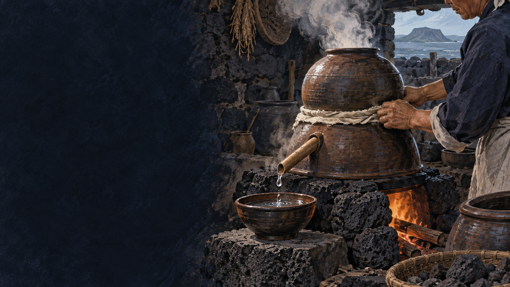

고소리
솥과 냉각부, 술이 흐르는 주둥이가 결합한 옹기 증류기입니다.
 제주에서는 이 재료를
제주에서는 이 재료를
제주 음식의 생활문화를 바탕으로 제작한 기록화 · 생성 이미지
고소리는 발효주를 끓여 알코올 증기를 모으고 식혀 술로 받는 제주 전통 증류 도구입니다. 도구의 이름이 그 도구로 내린 술의 이름으로 이어졌습니다.
아래 솥에서 오른 증기는 고소리 내부의 찬 면에 닿아 물방울이 되고 주둥이로 흐릅니다. 옹기 제작자와 술 빚는 사람의 기술이 만나야 가능한 과정입니다.
고소리 안에서 열과 수증기, 냉각이 이어지는 경로를 따라갑니다.
오메기술처럼 발효한 술을 준비합니다.
솥의 밑술을 천천히 데웁니다.
알코올과 향을 머금은 증기가 오릅니다.
찬물을 댄 윗부분에서 증기를 식힙니다.
주둥이로 떨어지는 술을 나누어 받습니다.
옹기 재료와 불 조절, 도구를 만든 장인의 기술이 술의 성격을 결정합니다.
솥과 냉각부, 술이 흐르는 주둥이가 결합한 옹기 증류기입니다.
기밀성·두께·불 조절이 증류의 효율과 맛을 좌우합니다.
많은 밑술에서 적은 증류주가 나오기에 행사와 접대에서 가치가 컸습니다.
유명한 메뉴보다 왜 이런 재료와 방식이 제주 생활에 필요했는지를 먼저 묻습니다.
같은 곡물에서 출발한 발효주와 증류주의 향·도수·쓰임을 구분합니다.
탁하거나 곡물 성분이 남음
맑은 증류액
비교적 낮음
상대적으로 높음
새콤함과 곡물 향
향이 응축되고 깔끔함
—
차조 술밑과 제주 옹기 문화가 핵심
고소리술은 레시피만 기록해서는 온전히 설명되지 않습니다. 증류기를 만드는 흙과 장인의 손, 불을 보는 경험까지 음식문화의 일부입니다.
오늘날 생산자는 위생·품질 관리를 더한 설비를 쓰면서도 전통 고소리의 구조와 이름을 이어 갑니다.
발효는 시간을 모으고, 고소리는 그 향을 한 방울씩 모읍니다.
생산자에 따라 원료 배합과 증류 설비, 숙성 방식이 다릅니다. ‘전통 방식’이라는 표시는 실제 공정과 원료를 확인해 기록합니다.
공공기관·연구기관의 원문을 우선했습니다. 링크와 문서 내용은 2026년 9월 확인했습니다.